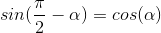

Cofunction Identities
The cofunction identities relate sin and cos showing that they are just a shifted version of each other.

This graph shows how at any time sin and cos are only pi/2 away from each other.
It then follows that
This also applies between tan and cot
And it applies for the reciprocals
For tan does can the quotient identity apply to the cofunction identity. If so what does it look like? Solution Here